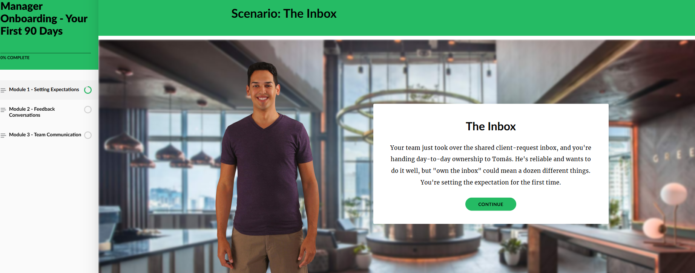
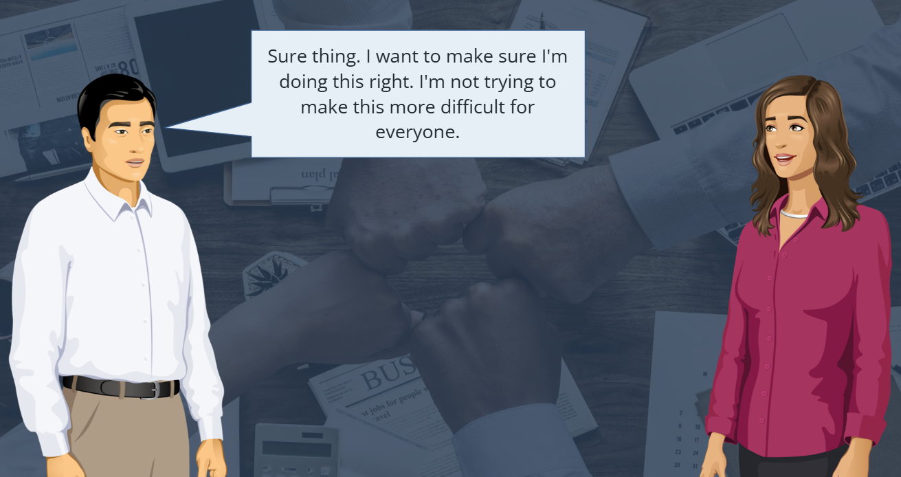
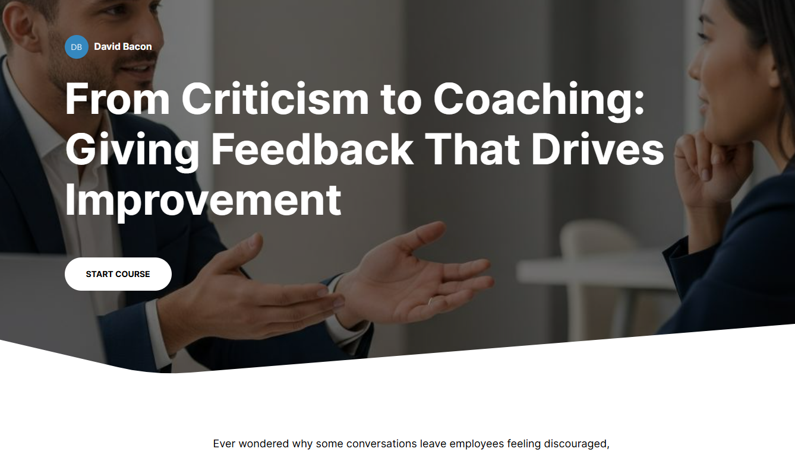

Instructional Designer and E-Learning Developer
Instructional Design | Leadership Development | Learning Experience Designer | Scenario-Based Learning
Nineteen years of diagnosing why people aren't performing, and building the training that fixes it. I've directed multi-year development programs serving 150+ participants annually across four concurrent learner cohorts, earning Excellent performance ratings in 11 consecutive review cycles — by treating learning design as a performance problem first and a content problem second. I'm now bringing that background into corporate Instructional Design, Talent Development, and Leadership Development roles where the results need to be measurable.
Projects

PreviewThe First 90 Days: Onboarding New Managers
A sequenced microlearning program that walks newly promoted managers through the three conversations that define their first 90 days: setting expectations their team can act on, delivering feedback that addresses behavior without attacking character, and building communication rhythms that surface problems early. Each module pairs a taught framework with two branching scenarios and a downloadable job aid, so learners rehearse the decision before they face it at work.
I designed the full program as a single ADDIE cycle: objectives written in Mager's ABCD format, cognitive demand sequenced across the three modules using Bloom's Taxonomy, and every module built on a shared architecture drawn from Gagné's Nine Events. The design document records the reasoning behind each of those decisions, including the revisions I made after reviewing my own draft.

PreviewDifficult Conversations
An interactive branching scenario that helps new managers practice difficult workplace conversations. Learners guide Jordan, a manager, through a performance conversation with Alex, choosing responses that lead to success, soft failure, or escalation. The project focuses on feedback delivery, expectation-setting, tone, and supporting behavior change through realistic decision-making.

PreviewDelivering Better Feedback
A short Rise-based learning experience exploring the difference between advice, criticism, and actionable feedback, with practical strategies learners can apply immediately.
About Me
I spent 19 years designing and leading learning experiences in public education, building repeatable systems that helped learners develop skills, respond to feedback, and improve performance over time. That work shaped my approach to instructional design: learning should be practical, realistic, and built around what people actually need to do.
My current portfolio focuses on scenario-based learning, leadership development, AI-supported simulations, and performance support resources. I'm especially interested in designing scalable learning systems that help employees communicate clearly, adopt new processes and tools, and navigate challenging workplace situations with confidence.
Contact
If you'd like to learn more about my work or connect, I'd be glad to hear from you.